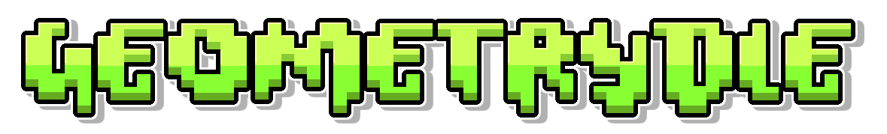

Loading levels...

Welcome to Geometrydle! (originally dashle but this name already exists) Try and guess which level has more downloads!
Your final score: 0
Website developed by devpiruleib
Assets by RobTop Games, taken at GDBrowser
API by GD Colon, taken at GDBrowser's API (i love gd cologne)